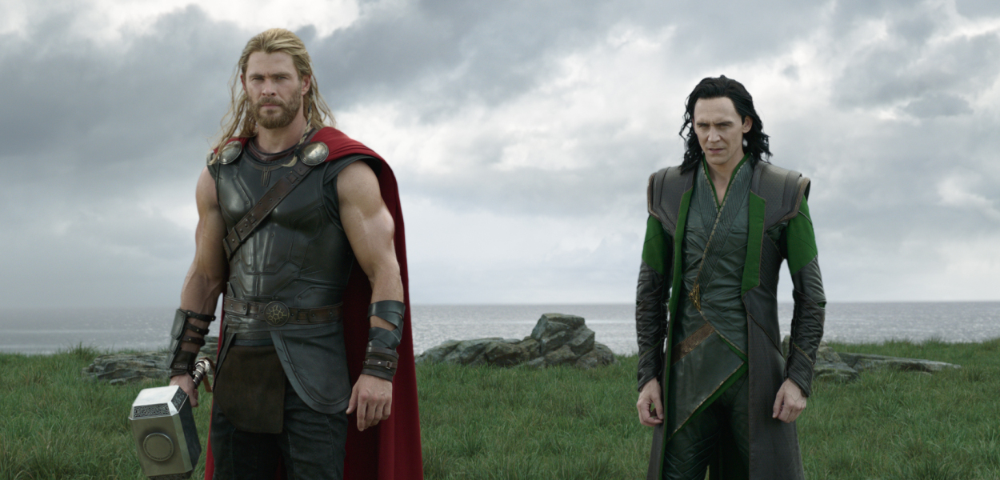
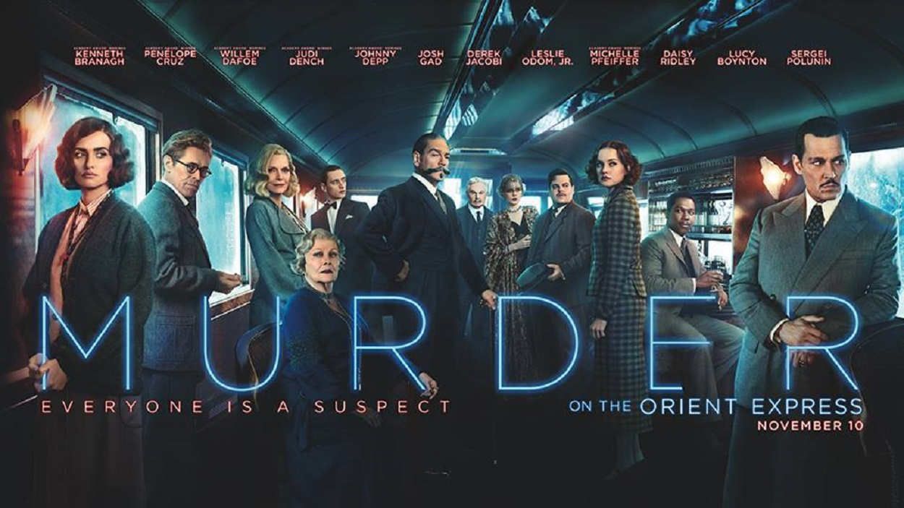
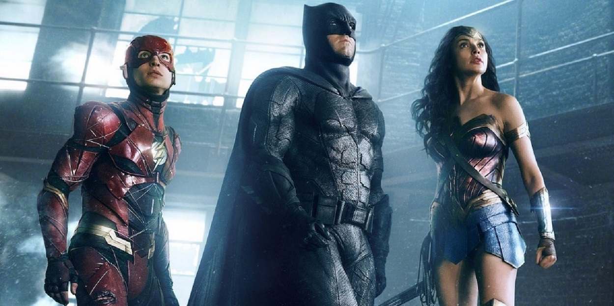
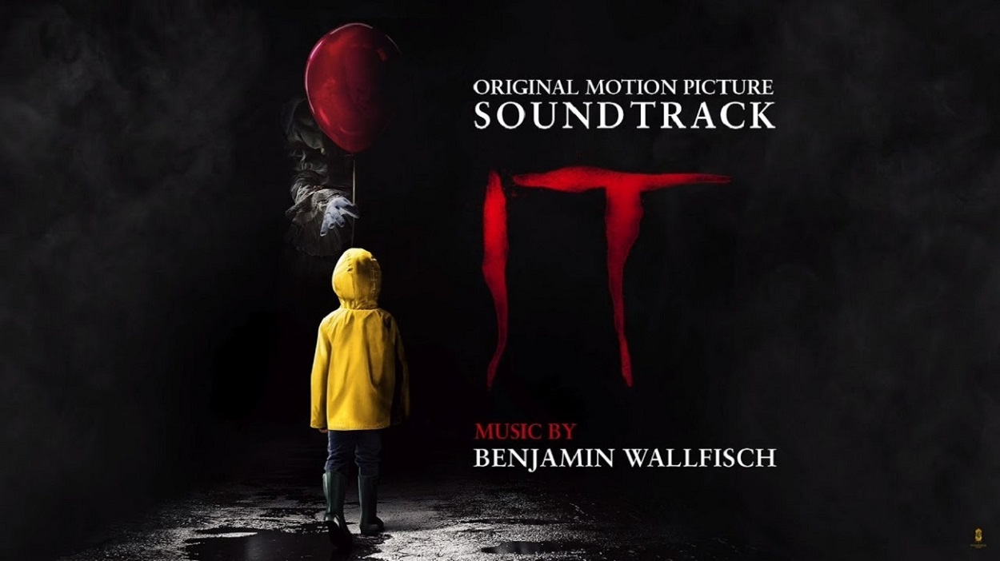

Fantasy/Science fiction film
2017
Imprisoned on the other side of the universe, the mighty Thor finds himself in a deadly gladiatorial contest that pits him against the Hulk, his former ally and fellow Avenger. Thor's quest for survival leads him in a race against time to prevent the all-powerful Hela from destroying his home world and the Asgardian civilization.
Mystery/Crime film
2017
A lavish trip through Europe quickly unfolds into a race against time to solve a murder aboard a train. When an avalanche stops the Orient Express dead in its tracks, the world's greatest detective -- Hercule Poirot -- arrives to interrogate all passengers and search for clues before the killer can strike again.
Fantasy/Science fiction film
2017
Justice League is a 2017 American superhero film based on the DC Comics superhero team of the same name, distributed by Warner Bros. Pictures, the film is intended to be the fifth installment in the DC Extended Universe.
Fantasy/Science fiction film
2017
Fueled by his restored faith in humanity and inspired by Superman's selfless act, Bruce Wayne enlists newfound ally Diana Prince to face an even greater threat. Together, Batman and Wonder Woman work quickly to recruit a team to stand against this newly awakened enemy. Despite the formation of an unprecedented league of heroes -- Batman, Wonder Woman, Aquaman, Cyborg and the Flash -- it may be too late to save the planet from an assault of catastrophic proportions.
